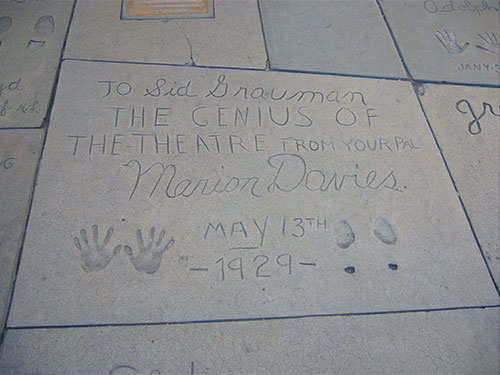

Jessica Wilkinson
from FRAGMENTS OF MISS MARION DAVIES
MARION:
Little old lady in a big red room
Little old lady in a big red room
A biography begins at death
cut loose the cords
and polish off the spine
I hold out my hands
and call to the gathering
These are my friends
better known than I
oh—but would she
have found me
blaring in the hotlights
CUT
Marion sits at a table between George Bernard Shaw and Albert Einstein. To Albert, she turns to twiddle her fingers through his hair Why don’t you get a haircut? And then to Shaw, who earlier said Woman reduces us all to the common denominator, she makes to trim his beard And you! I can’t see that you’re talking at all!
emboldened by the lick of pleasure
you step onto the page
and off again
a stone across water

I dreamt last night that I knew what it felt like to be in your shoes, but they were too small and dainty for me and the feeling was distorted. I clumped across the stone pavement baring imprints and when I turned backwards to face the damage I felt regret that I had gotten it all wrong. Hey you! you shouted through the thicket Hurry up and get my guests a drink! With that you set me straight and reminded me of the task at hand
Hyperbole at the window
Apostrophe on the bed
Retreat
I must retreat
before the word is said
The
FLORADORA GIRL
A STORY OF THE GAY NINETIES
A background story
an apology of folly
dredging up the past
receding her
ideally suited to the part
and forc’d by chorus to discourse
what should have been in life
a happy ending
Warns Fanny:
‘His intentions are not honorable’
as he buys her daisies
and a bracelet
and drives her
with his horseless carriage.
The shoe thrown off at midnight
lies glistening in the alleyway.
Ladybird, ladybird
in your spotted armament
is your heart beneath
content
or do you not prefer the word*
Ladybird, ladybird
shiny as a diamond ring
does he press you to his wing*
or is my thinking too absurd?
*not prefer [understand]
*press you to his wing [make your feelers sing]
Working note
Influenced by Susan Howe's 'poetic histories' I am fascinated by the infinite and varied capacity of poetic language to explore the past, and in particular, silenced or forgotten voices. As part of my PhD dissertation, I am writing a poetic biography on silent cinema actress Marion Davies, lover of media-tycoon William Randolph Hearst. I was drawn towards Marion to be the focus of this work because she was not only 'silenced' by the screen, but her image was 'manufactured', to a certain degree, by the powerful Hearst, who used his newspapers and money to create a Hollywood star. Their 30-year love affair never culminated in marriage - his wife Millicent would not divorce him - and as a result their relationship was not publicly acknowledged (to Marion's enduring disappointment). Furthermore, in this Hollywood setting, where much went on 'behind closed doors', there are many aspects of Marion's life that are mere speculation (such as her having a daughter with Hearst) and not confirmed.
I don't believe that a simple prose biography is adequate to explore the dimensions of Marion Davies' life. It is for these reasons, and many more, that I have turn to poetic language to 'pay tribute' to this fascinating woman. I believe that the many 'possibilities' opened up by various poetic devices are potentially more capable of invoking the 'voice' of this enigmatic character.